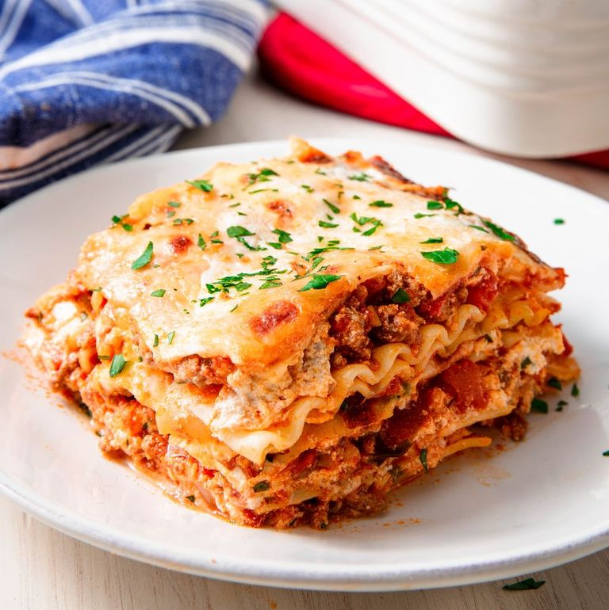

Lasagne

Description
This recipe will show you how to make this delicious traditional italian
dish.
Ingredients
- Large bowl, safe to put in the oven
- Lasagne pasta sheets
- ~1l Bolognese sauce
- ~0.5dl Béchamel sauce
- Grated cheese
- Some butter
Preperation
-
Warm the oven according to information on the package of the pasta
sheets.
- Use the butter to grease the bowl (prevents sticking).
-
Put some Béchamel sauce in the bowl (Be aware that you need more to
cover off the last layer of Pasta, see step 9).
-
Add a layer of pasta sheets. You can break off some edges to make sure
you can cover as much as possible of the bowl.
- Add some Bolognese sauce, the pasta should be covered.
-
Add some Béchamel sauce (does not need to cover the Bolognese sauce).
- Add another layer of pasta sheets.
-
Repeat the steps to create those layers until the bowl has around 0.5cm
left (prevents dripping over the edge of the bowl).
-
Use the rest of the Béchamel sauce to cover the last layer of pasta.
- Cover the bowl with aluminium foil (keeps moisture in).
- Bake the Lasagne according to the instructions on the pasta.
-
Take the foil away in the last 10 minutes and put the grated cheese on.
-
When its done, take the Lasagne out, put the foil on again and let it
rest for 10 minutes before serving.
- Enjoy!
Back